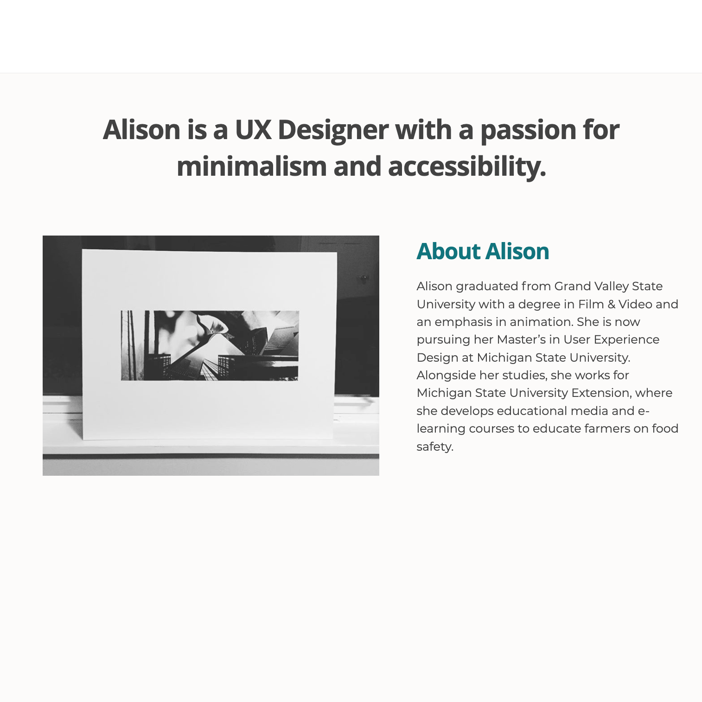

Posts

Alison Work
Excited to announce I was accepted into the UX Design Masters Program at Michigan State University!
Alison Work
This article I found on Medium was really interesting! http://www.medium.com
Projects

About
Hello! I’m Alison Work. I currently work for Michigan State University Extension as a Digital Media Designer, and I’m pursuing my Masters in UX Design at Michigan State University. Previously, I attended Grand Valley State University where I majored in Film & Video, minored in Business, and was a member of the cross country and track team.
Experience
Master of Science in UX Design
Michigan State University
2023 – present
Digital Media Designer
Michigan State University Extension
2018 – present